命题逻辑是演绎逻辑最核心的组成部分，研究由命题和命题联结词构成的复合命题以及研究命题联结词的逻辑性质和推理规律。命题逻辑涉及对假言、联言、选言、模态、负命题及相关等值推理的综合运用。由于推理形式是命题形式之间的关系，因此，为研究推理的有效性，就要对命题的形式进行分析。
基本复合命题是指该复合命题的支命题都是简单命题，根据所含联结词的不同，我们将基本复合命题分成联言命题、选言命题、假言命题与负命题四类。以基本复合命题为前提或结论的推理就是复合推理。
联言命题是反映事物的若干种情况或者性质同时存在的命题，一般是由“并且”这类联词连接两个支命题形成的复合命题。
在自然语言中，联言命题的语言表达形式是多种多样的：
①并列关系的复合命题。
并列关系的复合命题由两个或两个以上的分句并列组合而成。例：
在自然语言中，表示对偶、对比、排比关系的句子常常省略掉联结词。例：
②承接关系的复合命题。
承接关系涉及时间和空间的顺序。例：
③转折关系的复合命题。
转折关系有强调的作用。例：
④递进关系的复合命题。
递进关系旨在补充和强调。例：
联言命题又称为合取命题。在自然语言中，联言命题表达了支命题之间的内容、意义，甚至语气上的相互关联。逻辑显然不能处理这些相互关联，它只研究支命题与复合命题在真假方面的相互关系。我们把“P并且Q”看作它的标准表达形式，其中P、Q为联言支。
联言命题的形式可表示为： P而且Q。逻辑上则表示为： P∧Q（读作P合取Q）。
联言命题的逻辑值（即真假值）与其联言支逻辑值的关系可用下表来刻画，其中“1”代表“真”，“0”代表“假”。
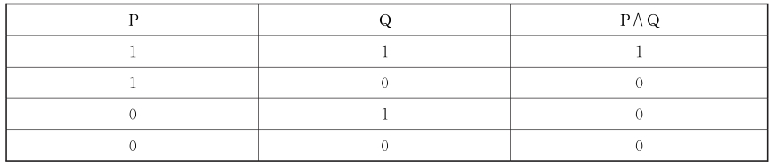
联言命题的逻辑含义：
①联言命题真，则联言支命题真;联言命题假，则联言支命题不确定。
②联言支命题都真，联言命题真;联言支命题只要有一个假，联言命题就假。
③相互矛盾判断组成的联言支必然为假，如P且非P，不论P是什么内容，该联言判断必然为假。
【案例】
三兄弟锁橱门
张一、张二、张三是三胞胎，爸爸为他们三人做了一个共用的橱柜，然后发给他们三个每人一把锁和开这把锁的钥匙。有一天，爸爸对他们三人说：“我这里有一个条件，如果你们能做到的话，我明天就去买一只小足球给你们踢。而这个条件是：如果你们要踢球的话，只有当三个人都在的时候才能把足球拿出去踢。你们该怎样做才能达到这个条件？”这时，老大张一说了：“爸爸，我们只要采取一种锁法，就能符合你提出的条件。”

请问三兄弟应该怎样锁橱门呢？
分析：只有在张一打开自己的锁，而且张二打开自己的锁，而且张三打开自己的锁的时候，橱门才会被打开。这实际上是联言判断逻辑原理的应用。
联言命题的联结词有：并且，和，也，然后，不但……而且，虽然……但是，不仅……还，然而，此外，尽管，不过等等。
在现代汉语中用这些联结词所联结而成的联言命题并不完全等同于用“∧”所联结而成的合取式。要注意合取词与各种日常语言中的联言联结词的异同：
①合取词“∧”只保留了所表示的联言命题与其支命题之间的真假关系。
合取词是对联言命题联结词在真值方面的一种逻辑抽象，仅仅保留了“断定事物若干情况存在”这一意义，与联言支之间在内容上的联系无关，舍去了它们可能表示的并列、承接、递进、转折、对比等意义。因而用“∧”所表示的联言命题的真假与联言支之间在内容上的联系无关。
②合取交换律成立， P∧Q与Q∧P总是取同样的真值。
即一个合取命题成立与否，与其中合取支的顺序无关，舍弃了在日常语言中的意义上的关联。
联言推理有两种形式：
（1）分解式
这是根据一个联言命题为真而推出其各联言支为真。公式是：P∧Q；所以， P（所以， Q）
（2）组合式
这是根据一个联言命题的各个联言支为真而推出该联言命题为真。公式是：P， Q；所以， P∧Q
根据上述联言命题及其推理的形式、含义与推理规则，下面举例说明其逻辑应用。
分析：上文断定：
分析：本题存在两个直言命题的推理。
选言命题是断定事物若干种可能情况的命题。选言命题也叫析取命题或析取句，是由两个以上的支判断所组成的，包含在选言命题里的支命题称为选言支。
（一）相容选言命题及其推理
相容选言命题也叫析取命题，是断定事物若干种可能情况中至少有一种情况存在的命题。
相容选言命题的联结词有：“或者……或者……”“要么……要么……”“也许……也许……”“可能……也可能……”等等。
相容选言命题在逻辑上表示为： P∨Q（读作“P析取Q”）。
相容选言命题的逻辑值与其选言支的逻辑值之间的关系可表示如下：
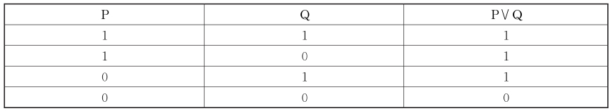
由于相容选言命题的各个支所断定的情况是可以并存的，因此，在相容选言判断中，可以不止有一个选言支是真的。
【案例】
三兄弟锁橱门
张一、张二、张三都爱好养蚕。他们兄弟三人各自养了一盒，并把蚕养在三兄弟共用的橱里。爸爸在他们养蚕时就与他们约定，爸爸妈妈由于工作忙，所以他们的蚕要自己想办法喂养。于是，他们三个约好，谁先回家谁就先给蚕喂桑叶。
请问在这种情况下，三兄弟应该怎样锁橱门？
分析：只要在张一打开自己的锁，或张二打开自己的锁，或张三打开自己的锁的时候下，橱门就会被打开。
在这里，实际上是相容选言判断原理的具体运用。用逻辑语言来表达，即：只要张一、张二、张三三人中，有一人打开自己的锁为真时，“橱门打开”就为真。只有当三人中没有一个人打开自己的锁，即张一、张二、张三打开自己的锁全为假的时候，橱门才不会被打开（即“橱门打开”才为假）。
根据相容选言命题的逻辑性质，相容选言命题的逻辑含义如下：
①当全部选言支所断定的情况至少有一个存在时，这个选言命题就是真的。
这意味着，若肯定一个选言支，则必须肯定包含这个选言支的任一选言命题;选言支命题都真或部分真，相容选言命题真;选言支命题都假，相容选言命题才假。
②相容选言命题并非直接肯定某个支命题为真，而是说至少它们当中有一个是真的。
这意味着，选言命题真，则选言支命题不确定;选言命题假，则选言支命题假。
相容选言三段论是指有一个相容选言命题作为大前提，一个简单命题作为小前提，并且根据相容选言命题的逻辑特征推出另一个简单命题作为结论的推论方法。
相容选言三段论的推理规则如下：
①否定一部分选言支，就要肯定另一部分选言支。
相容选言三段论只有一种正确的推论方法，即“否定肯定式”。“否定肯定式”是通过否定相容选言命题的其他支命题，进而肯定剩余的支命题的推论方法。
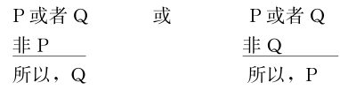
分析：在这个选言三段论中，“此刻灯不亮或是因为停电，或是因为电路故障”是一个相容选言命题。该推理通过否定其中的一个支命题“没有停电”，进而肯定另一个支命题“灯不亮是由电路故障引起的”。
分析：在这个选言三段论中，“被告人或犯贪污罪，或犯受贿罪”是一个相容选言命题，因为这两种罪可能同为一人所犯。该推理通过否定其中的一个支命题“被告人不是贪污罪”，进而肯定另一个支命题“被告人是受贿罪”。
在科学实验中，也在大量使用着选言推理。任何科学研究都是一个根据材料提出各种可能，做出选言判断，然后再逐步验证并排除掉不可能的因素，最后得出符合实际的结论的过程。在医疗诊治和案件的侦破中，这种方法是常用的，其所运用的推理方式就是选言推理的否定肯定式。
②肯定一部分选言支，不能否定另一部分选言支。
不正确的选言三段论： P或Q；P，所以，非Q。
根据上述相容选言命题及其推理的形式、含义与推理规则，下面举例说明其逻辑应用。
分析：题中“可能是出于该企业的道德良心，也可能是担心受到处罚”是相容选言命题，不能在肯定一个选言支时，否定另外一个选言支。Ⅱ与其一致。
分析：
本例给出了得隐球菌性肺炎的三种途径：鸽粪传播、空气传播或隐球菌健康携带者传播。Ⅲ指出了小张得隐球菌性肺炎不会是第三种途径，当然就只能是前两种途径种的任何一种了。因此，一定为真。
分析：上文论证用的是选言证法，又称排除法或淘汰法。在诸选项中，只有Ⅱ说明了这一点。
（二）不相容选言命题及其推理
不相容的选言命题是断定事物若干可能情况中有而且只有一种情况存在的命题。如：
“一个物体要么是固体，要么是液体，要么是气体。”
“一个三角形，要么是钝角三角形，要么是锐角三角形，要么是直角三角形。”
上述命题都表达了不相容的选言命题，它们断定的关于事物的几种可能情况是不能并存的。
不相容选言命题的联结词有：“要么……要么……二者必居其一”“或者……或者……二者必居其一”“不是……就是……”等等。
不相容选言命题的标准形式：“要么P，要么Q，二者必居其一”
用符号“&”（读作强析取）来代表其联结词，不相容的选言命题就可表示为公式：P& Q。其真值表如下：
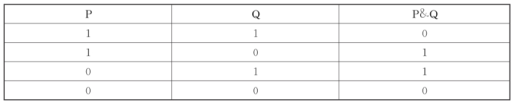
由于不相容的选言命题断定了事物若干可能情况中，有而且只有一种情况存在，这样，一个不相容的选言命题为真，当且仅当恰好有一个选言支为真。当所有的选言支都为假或超过一个选言支为真时，整个不相容的选言命题便为假。
不相容选言三段论是指前提中有一个不相容选言命题作为大前提，一个简单命题作为小前提，并且根据不相容选言命题的逻辑特征推出另一个简单命题作为结论的推论方法。不相容选言推理有两条规则：
①否定一个选言支以外的选言支，就要肯定未被否定的那个选言支。
否定肯定法是通过否定不相容选言命题的其他支命题，进而肯定剩余的一个支命题的推论方法。
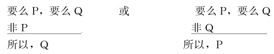
②肯定一个选言支，就要否定其余的选言支。
肯定否定法是通过肯定不相容选言命题的一个支命题，进而否定剩余的支命题的推论方法。
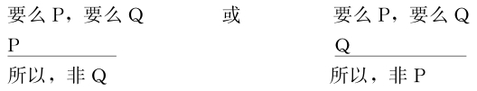
选言推理的应用及其注意事项。
区分相容选言命题和不相容选言命题，不能只看联结词，而应重点看它们的真值情况。各个选言支能够同时为真的，是相容选言命题;不能同时为真的，是不相容选言命题。当识别一个选言命题究竟是相容还是不相容时，要依靠相关背景知识去辨别各个支命题能否同时成立。
【案例】
土耳其商人和帽子
据说爱因斯坦提出过一个逻辑推理题，内容如下：
有一个土耳其商人，想找个协助他经商的伙伴。有两个人前来报名。土耳其商人想知道这两人中谁更聪明，于是想出一个办法来测验他们。他把两人带进一间屋子，这间屋子用灯照明，没有镜子，也没开窗户。商人指着一个盒子说道：“这里面有五顶帽子，两顶红的，三顶黑的。现在我把电灯关掉，打开盒子，我们三人每人摸一顶帽子戴在自己头上。然后我盖上盒子，开亮电灯，你们俩尽快地说出自己头上戴的帽子是什么颜色。”当电灯开亮之后，那两个人看见商人头上戴一顶红色帽子。两人相互看了看，无法判断。过了一刹那，其中一个喊道：“我的是黑的!”这个人的判断是正确的，他于是被选中了。
分析：解这道题，所用的是不相容选言推理。帽子只有两种颜色，不是戴红帽，就是戴黑帽。现在商人戴的是红帽，就是说还剩下一顶红帽。假定甲看见乙戴的也是红帽子，那他立刻就可以推断自己是戴黑帽的。但是甲看见乙头上的帽子后不吱声，说明甲看到乙戴的是黑帽，于是乙马上悟到自己头上戴的是黑帽子。
在日常语言中，选言命题有很多表述方式：
①联结词“要么……要么……”一般在不相容意义上使用：
但“要么……要么……”有时也可在相容意义上使用，如：
②联结词“或者……或者……”一般在相容意义上使用：
但也可在不相容意义上使用。“或者”有时也用来表达了陈述之间不相容的关系，这样使用时一般会增加诸如“二者必居其一”，或者“二者不可兼得”这样的限制。如果这样的限制被省略，则需要依据具体的语境来辨别。如：
该陈述等同于“掷硬币，要么正面向上，要么反面向上”。
③联结词“不是……就是……”（问句变体：“是……还是……？”）表示不相容意义。
选言命题的选言支有一个是否穷尽的问题。一个选言命题的选言支穷尽，是指这个选言命题的选言支包括了所有可能的情况;一个选言命题的选言支不穷尽，是指这个选言命题的选言支没有包括所有可能的情况。
①一个选言命题，如果选言支是穷尽的，这个命题就是真的;而选言支不穷尽的选言命题就不必然真。
②如果一个选言命题是真的，它的选言支不一定要穷尽。因为选言命题是断定在几种可能的事物情况中至少有一个事物情况存在，一个选言命题，如果它的选言支里有一个是真，虽然它的选言支没有穷尽一切可能，但这个选言命题仍然是真的。
③假若选言支不穷尽，就不能保证至少有一个选言支是真的，则选言推理有可能为假。
④选言支是否穷尽这一点，也是很多脑筋急转弯或智力测验中经常出现的测试点。我们要突破思维的盲点，从而出奇制胜。
【案例】
伽利略破案
意大利的伽利略是近代实验物理学的巨匠，他的聪明才智在破案上也闪耀过光芒，却不大为人所知。有一天，一位家里养有很多鸟的富翁在郊外别墅举行宴会。宴会开始不久，来宾中一位伯爵夫人遗失了一只钻戒。她是在洗手前把钻戒放在三楼客厅的桌子上，但从洗手间回到客厅时钻戒不见了，桌上却多了一支小牙签。以前这里也发生过一件相同的事情，同样在遗失钻戒的地方，放着一支小牙签。
钻戒确实被偷，这不是虚报。大家议论纷纷。小偷或者从门里进来，或者是从窗上爬进来。但是，这间三楼客厅，两次丢失钻戒时，都上了锁，小偷用钥匙开门的可能性也被排除，窗外没有梯子和其他攀登工具。钻戒真可说是不翼而飞。
正当来宾们迷惑不解的时候，伽利略送来富翁所订购的最新式望远镜。有人对他说：“伽利略先生，你有超人的智慧，能不能帮我们侦破这案子？不然，我们都成了嫌疑犯。”
伽利略听了两次失窃的介绍后，问：“发生失窃时，别墅里的养鸟人在哪里？”富翁说：“他在院子那边的小屋中，也没来过。”伽利略说：“他就是失窃案的主谋，一定不会错!”
养鸟人供认不讳。人们赞叹伽利略不愧为有头脑的科学家，既敏捷又思路开阔。
原来，养鸟人暗中训练了他喂养的鸟，让鸟飞到三楼去衔钻戒，为了防止鸟叫，就让它衔住一支小牙签。如果鸟儿行窃时被捉，人们也不会加以追究。
客人们的议论“小偷或者是开门进来，或者是从窗上进来”，是一个不穷尽的选言判断。它恰恰遗漏了真的那个选言支。
选言命题的直接推理除了上述所描述的，有时还涉及几类元素的组合，要在分析组合的所有情况的基础上进行推断。
分析：根据上文断定，要么使用甲胺磷等化学农药，要么使用生物农药。必然可推出Ⅰ、Ⅱ。上文断定了这两类农药各有优缺点，Ⅲ意思与此相悖，因此，不能从上文断定中推出。
分析：上文推理结构是，P和Q两件事不相容，所以，有Q就没P。
分析：由条件，投毒情况有以下六种，列表如下：
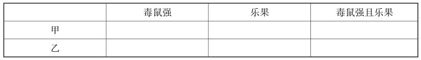
假言命题是断定事物情况之间条件关系的命题，所以又称“条件命题”。假言命题中，表示条件的支命题称为假言命题的前件，表示依赖该条件而成立的命题称为假言命题的后件。假言命题因其所包含的联结词的不同而具有不同的逻辑性质。
（一）充分条件假言命题及其推理
充分条件假言命题是指前件是后件的充分条件的假言命题。所谓前件是后件的充分条件是指：只要存在前件所断定的事物情况，就一定会出现后件所断定的事物情况，即前件所断定的事物情况的存在，对于后件所断定的事物情况的存在来说是充分的。
联结词：只要……就……，若……则……，假如……就……，假如……便……，若是……就……，当……，要是……那……，一……就……，每一个（所有）……都……，倘若……便……，哪怕……也……，就算……也……，一旦……，在……时候……
有时，表达充分条件关系的联结词还可以省略，例：“锲而不舍，金石可镂”“人心齐，泰山移”“留得青山在，不怕没柴烧”“招手即停”等等。
我们用符号“→”（读作“蕴含”）表示充分条件假言命题的逻辑联结词，充分条件假言命题可表示为下述这样一个公式： P→Q（读作“P蕴含Q”）。其真值表如下：
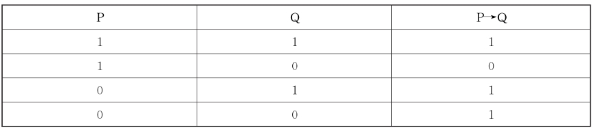
如上定义的蕴含称为“实质蕴含”。它告诉我们，一个充分条件的假言命题，只有当它的前件真，后件假时，该假言命题才是假的。在其他情况下，充分条件假言命题都是真的。比如，充分条件假言命题“如果天下雨，那么会议延期”，只有在天下雨但会议未延期的情况下才是假的，在其他情况下都是真的。
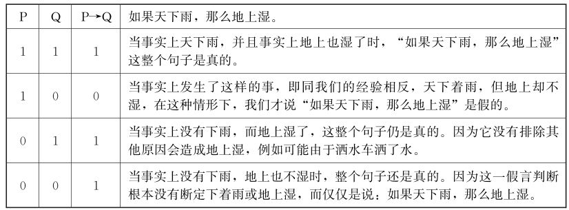
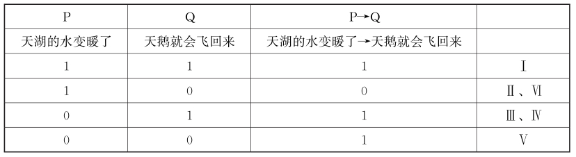
【案例】
算命仙的神机妙算
从前，在某个市集里住着一位算命仙。
他家门口挂了一个招牌写着：“神机妙算，一回一千元!如果算得不准，保证退钱”。
商人们看了，都争相来算命。
第一个来算命的是卖碗的商人。算命仙收了一千元后，假装念了一些咒语，说：“啊哈!如果碰到从东方来的人，你就会赚到钱。”商人想到今天会赚钱，就开开心心地离开了。
之后又有卖麦芽糖的商人、卖糕饼的商人与卖肉的商人前来算命，算命仙都对他们依样画葫芦，假装念了一些咒语，然后说：“啊哈!如果碰到从东方来的人，你就会赚到钱。”
当天晚上，卖碗商高兴地跑来找算命仙。
“真是谢谢您，我真的碰到来自东方的人，结果赚了很多钱，您真是太准了。”
算命仙笑着说：“那是当然的，以后欢迎再来算命啊。”
当卖碗商回去后，麦芽糖商人气呼呼地找来了。
“根本就不准嘛!我今天遇到从东方来的人，却一毛钱也没赚到!”
算命仙摸着下巴说：“那就奇怪了，不过既然不准，钱就还给你吧。”
当麦芽糖商人回去后，糕饼商人也怒气冲天地跑进来。“今天我都没赚到钱，把我的钱还给我!”
算命仙停顿了一下，问说：“那么，是否有碰到来自东方的人呢？”
糕饼商搔着头说：“没有，只碰到来自南方的人。”
“那就对啦，我是说你如果碰到从东方来的人就会赚钱，可没说碰到从南方来的人会赚钱啊。”
糕饼商听这话似乎有理，就回去了。
最后卖肉的商人也来了。“今天我的确是赚到了钱，但不是碰到来自东方的人，而是来自北方的人。所以你算错了吧？”
算命仙露出一副不可理喻的表情说：“嘿，这位兄弟，我是说你如果碰到从东方来的人就会赚钱，何时说你碰到从北方来的人就不会赚钱啊？我可没这么说喔。”
卖肉商人觉得有理，点点头回去了。
当所有商人回去后，算命仙露出笑容：“赚钱真是简单啊!四个人来算命都给一样的答案，竟然有三个是准确的，足足赚了三千啊。嘻嘻嘻!”
把“如果P，那么Q”的条件句称为“蕴含式”复合句。从充分条件真值表可以看出，当P假或Q真时， P→Q是真的。对于蕴含词的这样一种解释，被称为“实质蕴含”。关于这里实质蕴含，要求我们必须按照其真假关系制约来理解，而不能考虑其“言外之意”。因此，要注意与日常语言中假言命题的区别和联系。
（1）实质蕴含的意义
第一，实质蕴含P→Q是一种真假制约关系，而不管P和Q是否有内容、意义上的关联。
“P→Q”不完全等同于“如果P，那么Q”，这两者的含义也有所区别，前者只是对后者的一个真值抽象。具体而言，“P→Q”只表示P、Q之间的真假关系，条件句“P→Q”的真假情况是：只有P出现了，但却没有导致Q，它们之间的这个关系不存在，条件句“P→Q”，才为假。
第二，“如果P，那么Q” 除了表示P、Q之间的真假关系外，根据具体的语境，还可表示P、Q之间的其他联系。
自然语言中用“如果……那么……”表示条件句，有很多含义，其中主要有：条件关系、因果关系、推理关系、假设关系、时序关系、允诺、威胁甚至是打赌等等。在日常语言中，条件句表达两种状态间的一种“关联”的存在。
人们在实际思维过程中运用一个充分条件假言命题时，并不只是考虑其前后件的真假关系，同时还必须考虑其前后件之间在内容上的联系。
（2）蕴含怪论的理解
日常思维中所考虑和运用的充分条件假言命题总是适应着一定实际情况的需要，有其具体内容的。从日常思维来看，若前后件的具体内容之间并没有条件联系，因而认为是没有意义的。一些在日常思维中不能接受为真的命题，而在实质蕴含的意义上被确认为真，我们叫作“蕴含怪论”。
为进一步理解实质蕴含，下面举例说明：
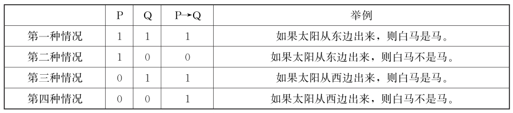
人们一般对第二种情况“当P真Q假时， P→Q为假”不持异议，但对于承认“当P假或Q真时， P→Q为真”却有很大保留，按实质蕴含的真值表，这些命题都是真的，似乎不大好理解，下面分别论述：
第一种情况：如果太阳从东边出来，则白马是马。
这种情况虽然从意义上不大好理解，但从实质蕴含规则来说，前件与后件均为真，那么这一命题就是真的。
第二种情况：如果太阳从东边出来，则白马不是马。
这种情况当然是假的，相对容易理解。
第三种情况：如果太阳从西边出来，则白马是马。
这种情况虽然从意义上也不大好理解，但从实质蕴含规则来说，前件假，后件真，那么这一命题就是真的。如果对这句话稍做改动“即使太阳从西边出来，白马也是马”，这样就相对好理解，这句话强调的是“白马是马”为真。
第四种情况：如果太阳从西边出来，则白马不是马。
这种情况类似虚拟条件句，通常被称为反事实条件句。从实质蕴含规则来说，前件与后件均为假，那么这一命题就是真的。这句话强调的是“白马不是马”与“太阳从西边出来”一样荒谬。
下面结合实质蕴含规则来进一步论述：
①真命题为一切命题所蕴含。
其意思是：若后件真，则不论前件真假，若P则Q永真。
我们结合上例的第一、第三种情况来理解：
第一种情况：如果太阳从东边出来，则白马是马。
第三种情况：如果太阳从西边出来，则白马是马。
这两句话加在一起的意思是：不管太阳是不是从东边出来，白马都是马，也就是说，后者与前者没有关系。
也就是说：当Q真时，无论P真还是P假，相应的蕴含式P→Q只不过是Q真的强调说法。
②假命题蕴含一切命题。
其意思是：若前件假，则不论后件真假，若P则Q永真。
我们结合上例的第三、第四种情况来理解：
第三种情况：如果太阳从西边出来，则白马是马。
第四种情况：如果太阳从西边出来，则白马不是马。
这两句话的意思是，如果太阳从西边出来，因为前件是假的，永远没有机会被证伪，所以，不管后件的真假，我们就不能说这两句话是假话。
【案例】
数学难题
“在什么条件下，二加三不等于五？”这个问题一下子把大家难住了。
沉默了一会，张明说：“负二加负三就不等于五。”数学老师说：“不能用负数，‘二’和‘三’都是正整数。”同学们很奇怪：“正整数的二与三相加，怎么会不等于五呢？”孙敬脑筋一转，来了灵感，他想，老师出的题目可能是脑筋急转弯，于是回答说：“当两只狼和三只兔子放在一起时，就不等于五只动物，因为狼会把兔子吃掉的。”王东等受到了启发，也说：“两只猫加三只老鼠也不等于五，还有……”“不对不对，你们想偏了。”老师连连摇头。大家想出了各种答案，都被数学老师否定了。“好了好了，我们服输了，老师您公布答案吧!”同学们急切地问。
“这个答案就是，”老师停顿了一下，慢慢地说，“如果一加一不等于二，那么，二加三就不等于五。”“哈哈哈!”全班同学哄堂大笑。大家笑过之后，数学老师问：“难道我说得不对吗？请同学们想一想其中的道理。”王东说： “老师，您用的是充分条件假言命题。”“这个充分条件假言命题是真的还是假的？”“当然是真的。”王东肯定地说。“为什么呢？”“因为它的前件‘一加一不等于二’是假的。充分条件假言命题的前件是假的，不管后件是真是假，整个命题总是真的。”
“说得很对。大家知道，‘二加三不等于五’是一个众所周知的假命题。为了使以这个命题为后件的充分条件假言命题为真，就必然要求前件也是一个假命题.所以我就将‘一加一不等于二’这个假命题，作为它的前件。”
孙敬说：“这样的话。您的这个问题就不止一个答案，‘一加一不等于二’可以换成‘二加二等于五’‘太阳从西方升起’‘海枯石烂’ 等等。”
“完全正确!”
充分条件假言三段论是指由一个充分条件假言命题作为大前提，一个简单命题作为小前提，并且根据充分条件假言命题的逻辑特征推出另一个简单命题作为结论的推论方法。充分条件假言三段论即充分条件假言推理可以归纳成两条规则：
第一，从肯定前件可以肯定后件，从否定后件可以否定前件。
第二，不得从否定前件到否定后件，也不得从肯定后件到肯定前件。
（1）两类正确的推理
充分条件假言三段论有两类正确的推论方法，即肯定前件式和否定后件式。
①肯定前件式。
如果P，那么Q
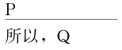
关于肯定前件式，值得注意的是前提的次序并不影响推理;其次，包含在肯定前件式中的条件句也可以长而复杂。
②否定后件式。
如果P，那么Q
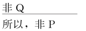
【案例】
难产诉讼
一位妇女死于难产，她丈夫起诉医生。法庭上，她丈夫请的律师和医生有如下对话：
律师：她在怀孕检查时，你是不是认为她生孩子是安全的？
医生：是的。
律师：也就是说，如果她受到正确的护理，她是可以安全生孩子的。
医生：是的。
律师：她是不是受到你的护理？
医生：是的。
律师：我没有问题了，谢谢!
分析：律师的问询运用了蕴含命题推理的否定后件式，是有效的推理。从表面上看，律师的问询似乎没有结果就结束了，实际上它蕴含着“她没有得到正确的护理”这个结论。具体推理如下：
如果孕妇受到正确的护理（P），她是可以安全生孩子的（Q）。
她没有安全生孩子。
所以，她没有受到正确的护理（省略）。
（2）两类错误的推理
充分条件假言三段论有两类错误的推论方法，即否定前件谬误和肯定后件谬误。
①否定前件谬误。
如果P，则Q
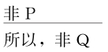
【案例】
丢皮箱者的推理
有一个人不小心把自己的皮箱丢了，皮箱里还装有许多贵重物品。别人都替他着急，忙着帮他四处寻找。他却一点也不着急。有人问他为什么这样沉得住气，他竟然说：慌什么？开箱子的钥匙还在我这里，别人捡了去也没有用!
分析：上述故事中，那位丢皮箱者的思维方式让人觉得好笑。之所以这样，就是因为他的思维方式不合事理、不合逻辑。丢皮箱者的思维活动包含了下面这样一个推理：
如果有开那皮箱的钥匙，就可以打开那皮箱（被省略了的假言前推）;
捡到那皮箱的人没有钥匙;
所以，捡到那皮箱的人打不开那皮箱。
这个推理误用了从否定前件到否定后件的充分条件假言推理，不能必然得出结论。从常识看，这个推理也是非常可笑的：有钥匙固然可以打开皮箱，没有钥匙难道就无法打开皮箱？撬开、砸烂难道也要钥匙。从逻辑的角度看，充分条件假言推理从否定前件不能必然地否定后件。因此，丢皮箱者的推理是一个无效的推理。
②肯定后件谬误。
如果P，则Q
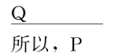
【案例】
猎人的逻辑
13世纪时，英国有个猎人，太太难产生下个孩子就死了，这个猎人养了一条忠实而凶猛的狗，非常聪明。有一次猎人外出打猎，留下狗照管自己的孩子。
他到了别的乡村，因遇大雪，当日不能回来。第二天才赶回家，狗立即闻声出来迎接主人。猎人把房门开一看，到处是血，抬头一望，床上也是血，孩子不见了，狗在身边，满口也是血，猎人发现这种情形，以为狗性发作，把孩子吃掉了，大怒之下，拿起刀来向着狗头一劈，把狗杀死了。
之后，忽然听到孩子的哭声，又见他从床下爬了出来，于是抱起孩子;虽然孩子的身上有血，但并未受伤。他很奇怪，不知究竟是怎么一回事。
再看看狗，腿上的肉没有了，旁边有一只狼，口里还咬着狗的肉。原来主人不在时，闯进了一只狼，狗为了救小主人，与狼搏杀，最后把狼咬死了。但忠实的狗却被猎人误杀了，这真是天下最令人伤心的误会。
分析：误会的产生，是因为这个猎人不懂逻辑，猎人的推理是这样的：
如果狗吃了小孩，那么它的嘴上有血，屋里也有血，孩子不见了;
现在，狗的嘴上确实有血，屋里也有血，孩子不见了;
所以，狗吃了小孩。
这是一个肯定后件式的谬误。
（二）必要条件假言命题及其推理
必要条件的假言命题是断定某一事物情况的存在为另一事物情况存在的必要条件的复合判断，即是指前件是后件的必要条件的假言命题。
可见，所谓前件是后件的必要条件是指：如果不存在前件所断定的事物情况，就不会有后件所断定的事物情况，即前件所断定的事物情况的存在，对于后件所断定的事物情况的存在来说是必不可少的。
在日常语言中，表达必要条件假言命题的联结词有：只有……才……，（仅当、必须）……才……，没有（不）……没有（不）……，唯若……才……，必须……才……，除非……才……，……是……的重要前提，……对于……来说是必不可少的，……取决于……，除非……否则不（则不、不、才）……
我们用符号“←”（读作“反蕴含”或“逆蕴含”）表示必要条件假言命题的逻辑联结词，必要条件假言命题就可表示为下述这样一个公式： P←Q。其真值表如下：
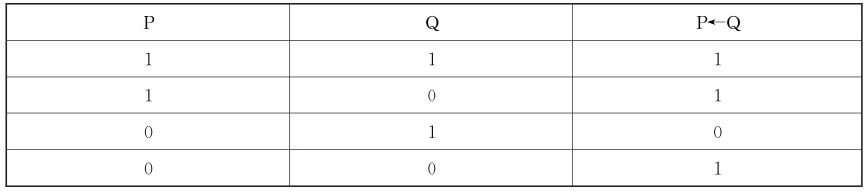
它告诉我们，一个必要条件的假言命题，只有当它的前件假，后件真时，该假言命题才是假的。在其他情况下，必要条件假言命题都是真的。
必要条件假言三段论，是指由一个必要条件假言命题作为大前提，一个简单命题作为小前提，并且根据必要条件假言命题的逻辑特征推出另一个简单命题作为结论的推论方法。必要条件假言三段论即必要条件假言推理，可以归纳成两条规则：
第一，从否定前件可以否定后件，从肯定后件可以肯定前件。
第二，不得从肯定前件到肯定后件，也不得从否定后件到否定前件。
（1）两类正确的推理
必要条件假言三段论有两类正确的推论方法，即否定前件式和肯定后件式。
①否定前件式。
只有P，才Q
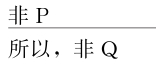
【案例】
蜘蛛网
1794年深秋，拿破仑的一支军队进军荷兰。在强敌入侵的紧急关头，荷兰人打开了所有运河的闸门，用滚滚洪水阻挡了敌军进攻。法军不得不撤退。但是撤退刚刚开始，法军统帅夏尔·皮舍格柳（拿破仑的老师）突然发布命令，停止撤军。因为他已获得一项报告：有人看见蜘蛛在大量吐丝结网。不久，寒潮来临，滚滚江河，一夜之间顿失滔滔。法国军队踏冰越过瓦尔河，一举攻克荷兰要塞乌得勒支城。
分析：一支军队的行动怎么取决于蜘蛛是否吐丝结网呢？有经验的人们知道，在深秋，只有当干冷天气即将到来的时候，蜘蛛才会大量吐丝结网。就是说干冷天气是蜘蛛大量吐丝结网的一个必要条件。人们根据蜘蛛在结网，就可推断干冷天气即将到来。法军统帅夏尔·皮舍格柳做了一个肯定式必要条件假言推理：
只有干冷天气即将到来时，蜘蛛才会大量吐丝结网。
现在蜘蛛大量吐丝结网。
干冷天气快要到来。
②肯定后件式。
只有P，才Q
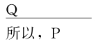
（2）两类错误的推理
必要条件假言三段论有两类错误的推论方法，即肯定前件谬误和否定后件谬误。
①肯定前件谬误。
只有P，才Q
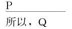
②否定后件谬误。
只有P，才Q
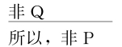
（三）充要条件假言命题及其推理
充要条件假言命题即充分必要条件假言命题，是断定某一事物情况的存在为另一事物情况存在的充分必要条件的复合命题。
充要条件假言命题联结词有：当且仅当……则……，不……不……若……则（必）……，如果……则……并且只有……才……，如果……就……如果不……就不……，只要并且只有……才……，只有而且只要……就……
我们一般用“当且仅当”来表示充分必要条件，可表示为：当且仅当P，则Q。
我们用符号“↔”（读作“等值于”）表示充要条件假言命题的逻辑联结词，充分条件假言命题就可表示为下述这样一个公式： P↔Q（读作“P等值于Q”）。其真值表如下：
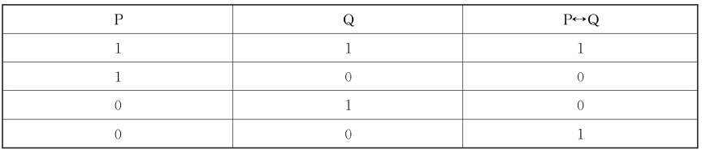
充要条件说的是，有前件必有后件，无前件必无后件。它强调的是，只有这个条件才能产生这个结果。具体而言， P是Q的充分必要条件是指：有P必有Q，无P必无Q（因而有Q必有P，无Q必无P）。
充要条件假言三段论，是指由一个充要条件假言命题作为大前提，一个简单命题作为小前提，并且根据充要条件假言命题的逻辑特征推出另一个简单命题作为结论的推论方法。充要条件假言三段论即充要条件假言推理可以归纳成两条规则：
第一，肯定前件可以肯定后件，肯定后件也可以肯定前件。
第二，否定前件可以否定后件，否定后件也可以否定前件。
由此，充要条件假言三段论有四种正确的推论方法，论述如下。
（1）肯定前件式
P当且仅当Q
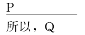
（2）肯定后件式
P当且仅当Q
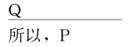
（3）否定前件式
P当且仅当Q
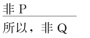
（4）否定后件式
P当且仅当Q
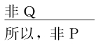
（四）条件关系的理解与逻辑解释
客观事物总是有各种各样的联系，其中能够导致其他情况出现的现象叫作条件，由先前现象引起的后继现象叫作结果。人们认识了事物现象之间的这种条件联系，就形成了假言命题。
条件陈述在逻辑学种简称为“条件句”。条件句有以下几个重要特征：
第一，一个条件句的前件和后件均并不包括逻辑联结词。
第二，条件句在本质上是假设性的。在断定一个条件句时，人们并没有断定其前件是真的，人们也没有断定其后件是真的。
第三，在日常语言中，表达一个条件句有多种方式。可用不同的逻辑联结词和语序来断定同一个条件关系。
第四，条件句断定的是前件与后件的真假制约关系，不等于先后关系，更不等于因果关系。
因果关系是先后关系，但原因是结果的条件关系包括充分条件、必要条件、充要条件、既非充分也非必要条件这四种。应注意不要颠倒了条件和结果的关系，假言判断的条件和结果是客观对象因果关系的反映，颠倒了条件和结果的关系，就是倒果为因、不合事理。
在P与Q两种基本关系组合下，条件句中的蕴含关系有四种可能：
第一种情况： P是Q的充分条件，但不是必要条件。
第二种情况： P是Q的必要条件，但不是充分条件。
第三种情况： P是Q的充分条件，又是必要条件。
第四种情况： P既不是Q的充分条件，也不是Q的必要条件。
下面分别就这四种情况详细讲述，以防止混淆不同的条件关系。
（1）充分条件
充分条件表明，如果前件真，那么后件也真。所谓充分条件就是仅有这条件就足以带来结果，无需考虑别的条件了。其意义包括：
①有前件必有后件。即有这个条件就一定有结果。
如果前项P是后项Q的充分条件，那么只要P存在， Q就存在。这就是说，如果P真，那么就保证Q也真。用箭头表示这种有P就有Q的蕴含关系，就是：
P→Q（如果下雨，路就会湿。）
②无前件未必无后件。即没这个条件不一定没有结果。
上述充分条件关系本身并不意味着，如果P不真， Q也不真; P的不存在并不等于Q一定不存在。没有下雨，路也可能因为别的原因打湿。
一个充分条件关系表明，这个条件足以导致这个结果;但是它并不意味着，这个充分条件是唯一足够导致这个结果的条件。
下雪或者溃堤，都足以打湿道路。另一方面，从充分条件关系可以看出，既然有P必然有Q，无一例外，那么，可以推理，如果Q没有出现，就说明P没有出现，用“﹁”代表没有，则没有看到Q，就表明P没有出现的关系表示为：
﹁Q→﹁P（如果路没有湿，那么没有下雨。）
③如果前件和后件是充分条件的关系（前件蕴含后件： P→Q），那么可以推导出，后件和前件是必要条件关系（后件的否定蕴含前件的否定：﹁Q→﹁P），反之亦然。
P→Q=﹁Q→﹁P（用=表示等同）
比如，如果下雨意味着路就会湿，那么，路没有湿就意味着没有下雨，反之亦然。
④充分条件强调的是，多种条件可以分别产生同一个结果。充分条件假言推理反映了客观世界中多因与其结果间的制约关系。一个结果可以由许多不同的原因中的任何一个原因产生。
运用充分条件假言推理时要注意，在通常情况下，充分条件假言命题的前件反映的只是能分别独立导致后件结果的若干条件之一，这种关系可图示如下：
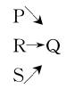
由图可知， P、R、S都可分别独立导致Q，所以，在没有P时并不一定没有Q（因为有R或S也会有Q），在有Q时也并不一定就有P（因为Q可由R或S所致）。可见，我们不可通过肯定一个充分条件假言命题的后件来肯定其前件，也不可通过否定一个充分条件假言命题的前件来否定其后件。
分析：
（2）必要条件
必要条件表明，如果前件假，那么后件也假。所谓必要条件就是没有这个条件，就一定没有这个结果。其意义包括：
①无前件必无后件。P是Q的必要条件是指无P必无Q。
如果P是Q的必要条件，表示P必须出现，才可以有Q。
只要P不存在， Q就不存在。这就是说，如果P不真，那么就保证Q也不真。表示这个没有P就没有Q的关系便是：﹁P→﹁Q（你不亲自做科学实验，你就不可能真正体会其中的意义。）
②有前件未必有后件。P是Q的必要条件还意味着有P未必有Q。
必要条件关系并不意味着，如果P真， Q也一定真; P的存在只是Q存在的一个不可或缺的条件，但还需要别的条件才能导致Q出现。比如你亲自做了实验，但还得取决于你经过认真思考，你才能真正体会其中的意义。
③从前件和后件的必要条件关系可以看出，因为P是Q的不可或缺的条件，所以如果Q存在，我们可以知道P也存在了。
表达这样有Q就可以蕴含P的关系是：
﹁P→﹁Q= Q→P（如果你真正体会了其中的意义，说明你亲自做了科学实验。）
④必要条件强调的是，多种条件合起来才能产生一个结果。
必要条件假言推理反映了客观世界中复因与其结果间的制约关系。一个结果的产生需要许多原因，缺一不可。这许多条件，就是复因。复因中的各个原因要联合起来，才能产生结果，只有复因之一，不能产生结果。
必要条件假言命题的前件反映的情况通常只是后件情况必不可少的条件之一，它往往需要与其他条件相结合才能共同导致后件所反映的情况，这种关系可图示如下：
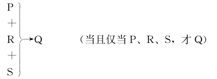
由图可知，要使Q成立，需P、R、S都同时成立。所以，仅有P，不一定有Q（因为也许没有R或S）;没有Q也不一定就没有P（因为没有R或S时，也就没Q）。
分析：上文的结论是，只有在新药转移到市场上之后，它们才能有助于病人。
（3）充分且必要条件
P既是Q的充分条件，又是必要条件，意味着：
①P不仅蕴含Q，而且只有P能蕴含Q。
②P是Q的唯一必要和充分的条件。这也就是说不仅P→Q，而且Q→P。
③不仅﹁P→﹁Q,而且﹁Q→﹁P。可用条件关系式表达为: P↔Q=﹁P↔﹁Q。
生活中，人们不常使用准确的语言来表述充分必要条件，而是只强调充分必要条件的充分性，或者只强调充分必要条件的必要性。
（4）既非充分又非必要条件
P既不是Q的充分条件，也不是Q的必要条件。似乎说两者无关，但实质上P和Q既没有充分条件，也没有必要条件的关系，并不等于无关。比如在统计性因果关系中，即使没有这样的充分和必要关系， P可以是Q的原因中的一个因素，它们相关。
有关条件关系的理解，要注意以下几点：
（1）所有的必要条件就是充要条件
必要条件强调的是若干条件之和才能产生后件，即：P1∧P2∧P3∧……→Q。
因此，所有的必要条件合起来就是充分条件，也是充要条件。
分析：上文陈述的条件关系如下：
（2）唯一的充分条件就是充要条件
充分条件强调的是若干前提之一都能产生后件，即： P1∨P2∨P3∨……→Q。
充分条件如果是唯一的，即唯一条件，那就是充要条件。
分析：满足“有合法用途”，必然“兴奋剂能出口”；不满足“有合法用途”，必然“兴奋剂不能出口”，所以“唯一条件”就是充分必要条件的意思。
分析：上文论证的推理形式：如果P，则Q；Q，所以P。（其中P为“在产品生产的旺季改变它的供货商”，Q为“今年公司赢利的情况肯定要比去年差得多”）。
充分条件的假言命题与全称直言命题可以互相转化。这可以用作图的方法帮助判断（一般而言，当主项相同的判断具有充分或必要条件时，充分条件是小圈，必要条件是大圈）。
（1） P→Q= P∧Q
若由P可以推出Q，即P→Q，则称P是Q的充分条件， Q是P的必要条件。
若P、Q用集合表示，即P包含于Q，如图所示。
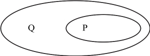
于是，如果P那么Q=所有P都是Q
（2）﹁P→﹁Q= P←Q= Q∧P
若由﹁P可以推出﹁Q，即 ﹁P→﹁Q，则称P是Q的必要条件。
若P、Q用集合表示，即P包含Q，如图所示。
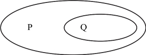
于是，只有P才Q=没有P就没有Q=所有Q是P=所有非P不是Q
等值推理包括基本复合命题的等价推理、复合命题的负命题及其等值推理等。
基本复合命题的等价推理包括假言直接推理以及选言命题与假言命题之间的等价转换。
（一）假言直接推理
假言直接推理包括：假言易位推理、假言换质推理、假言易位换质推理。
下面分别论述假言直接推理的这几种类型：
（1）假言易位推理
假言易位推理就是将前提中一个充分条件的假言命题的前件和后件的位置进行交换，从而推出结论的假言推理。假言易位推理的规则是：
第一，对调假言判断前、后件的位置。
第二，充分条件假言命题联结项和必要假言命题联结项相互变换。
假言易位推理的逻辑形式如下：
①如果P，那么Q=只有Q，才P。
即若前件是后件的充分条件，那么后件就是前件的必要条件。
写成条件关系式是:P→Q= Q←P
②只有P，才Q=如果Q，那么P。
即若前件是后件的必要条件，那么后件就是前件的充分条件。
写成条件关系式是： P←Q= Q→P
（2）假言换质推理
假言换质推理是只改变假言判断前、后件的真值，而不改变它们的位置的假言直接推理。假言换质推理的规则是：
第一，改变假言判断前、后件的真值。
第二，改变假言判断的逻辑联结项。如果前提是充分条件假言判断的联结项，那么结论改变为必要条件假言判断的联结项;反之，如果前提是必要条件假言判断的联结项，那么结论改变为充分条件假言判断的联结项。
假言换质推理的逻辑形式如下：
①如果P，那么Q=只有非P，才非Q。
写成条件关系式是： P→Q=﹁P←﹁Q
②只有P，才Q=如果非P，那么非Q。
写成条件关系式是： P←Q=﹁P→﹁Q
（3）假言易位换质推理
假言易位换质推理是既改变假言判断前、后件的位置，又改变它们的真值的假言直接推理。假言易位换质推理的规则是：
第一，对调假言判断前、后件的位置。
第二，改变假言判断前、后件的真值。
假言易位换质推理的逻辑形式如下：
①如果P，那么Q=如果非Q，那么非P。
写成条件关系式是： P→Q=﹁Q→﹁P
②只有P，才Q=只有非Q，才非P。
写成条件关系式是： P←Q=﹁Q←﹁P
假言直接推理的步骤如下：
（1）根据题意写出原命题的条件关系式
将自然语言形式化，注意元素符号化，收敛思维。
①有联结词的，根据联结词写出条件关系式;
②没有联结词的，就根据题意，根据充分和必要条件的理解写出关系式。
（2）写出逆否命题的条件关系式
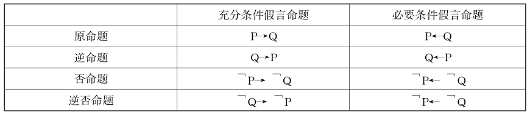
①原命题与逆否命题为等价命题。
即如果一个命题正确，那么它的逆否命题也一定正确。
充分条件逆否命题就由否定后件式而来， P→Q=﹁P←﹁Q
必要条件逆否命题就由否定前件式而来, P←Q=﹁P→﹁Q
②原命题与逆命题、否命题均不等价。
（3）条件理解
①充分条件和必要条件是相对的。
在假言命题中，充分条件假言命题和必要条件假言命题之间是可以相互转换的，若P是Q的充分条件，则Q是P的必要条件;反之，若P是Q的必要条件，则Q是P的充分条件。
②根据箭头推理的方向来确定条件间的关系。
符合原命题和逆否命题这两个箭头顺推方向的陈述与原陈述等价，逆着这两个箭头推理方向的陈述与原陈述不等价。
③上述原则同样适用前件或后件含有否定的变形推理。
P→﹁Q=﹁P←Q
﹁P→Q= P←﹁Q
根据原命题和逆否命题的两个推理方向，可有四种表达角度，使用不同逻辑联结词，同一个句子可以至少有十多种等价的陈述。而把两个推理方向搞反后，可至少也有十多种与原命题不等价的陈述。
（1）充分条件假言命题的等价陈述
P→Q=﹁P←﹁Q
由此，充分条件假言命题存在四种等价的陈述方式：
第一， P是Q的充分条件。
第二， Q是P的必要条件。
第三，非P是非Q的必要条件。
第四，非Q是非P的充分条件。
下面把充分条件假言命题的等价陈述和不等价陈述归纳如下表：
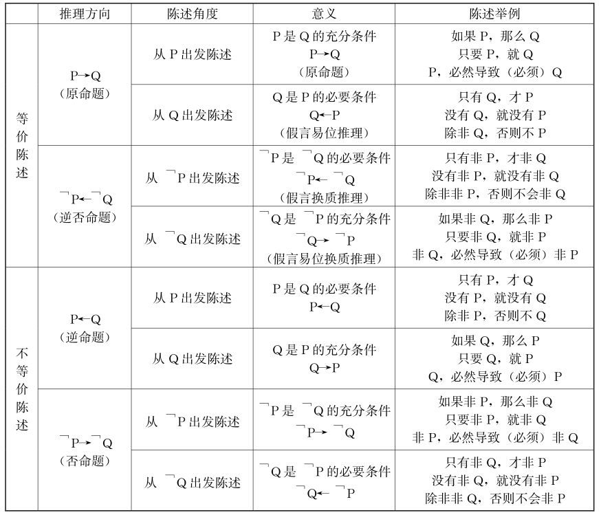
分析：
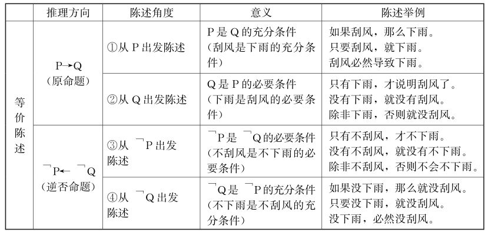
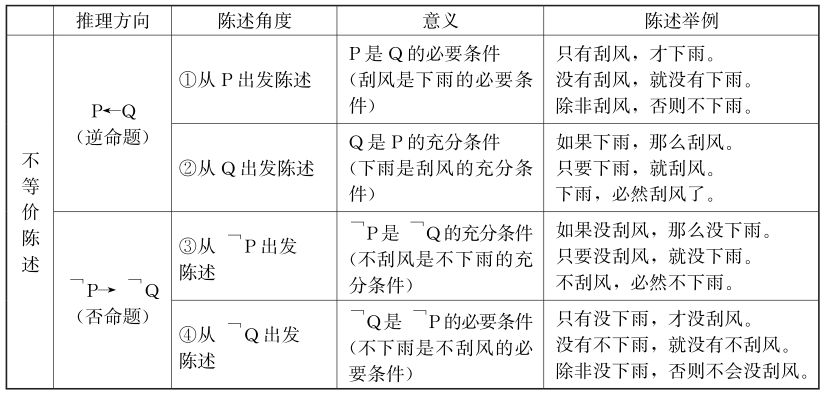
（2）必要条件假言命题的等价陈述
P←Q=﹁P→﹁Q
由此，必要条件假言命题存在四种等价的陈述方式：
第一， P是Q的必要条件。
第二， Q是P的充分条件。
第三，非P是非Q的充分条件。
第四，非Q是非P的必要条件。
下面把必要条件假言命题的等价陈述和不等价陈述归纳如下表：
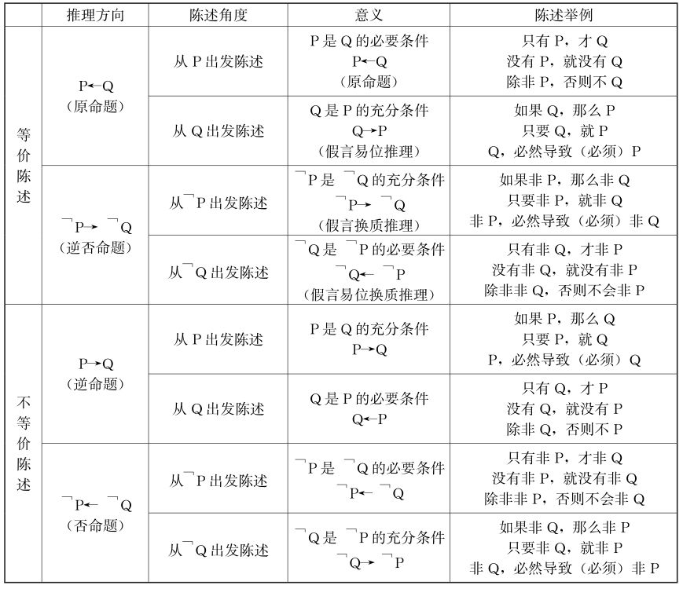
分析：
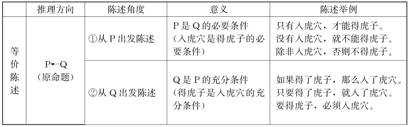
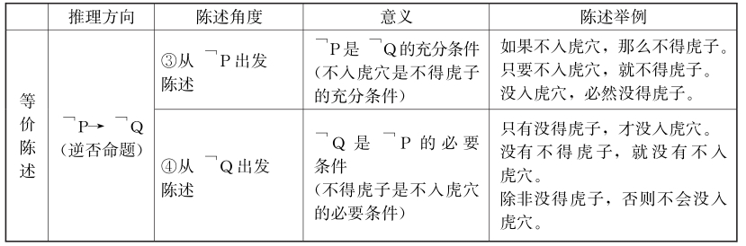
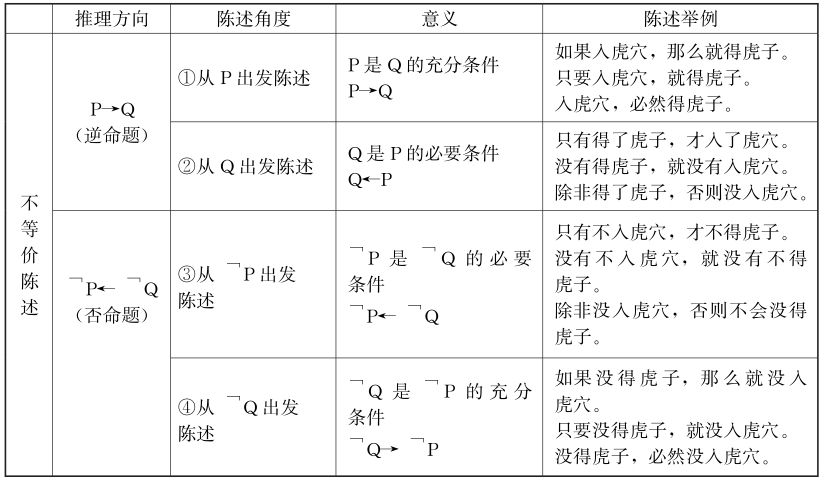
根据上述假言命题及其推理的形式、含义与推理规则，下面举例说明其逻辑应用。
分析：上文断定：
分析：上文断定：
分析：上文断定：
（二）复合命题间的等价转换
假言命题与选言命题可以互相进行等价的转换，下面进行分别论述。
由于相容选言命题存在着否定肯定式的推理，这时候就存在选言命题和假言命题的等价关系。
P或者Q=如果非P，则Q=如果非Q，则P。
（1）基本公式
P∨Q=﹁P→Q=﹁Q→P
可用真值表来证明：
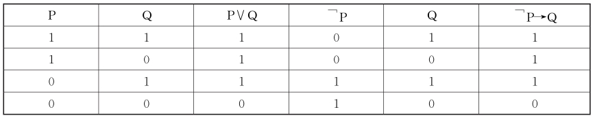
在日常语言中，“不是P就是Q”既可以理解为“P或者Q”，也可以理解为“如果﹁P则Q”。这就是说，“P∨Q”与“﹁P→Q”是等值的。这在直观上也是显然的。
（2）变形公式
该等价转换的变形如下：
①﹁P∨Q= P→Q
②P∨﹁Q=﹁P→﹁Q
③﹁P∨﹁Q= P→﹁Q
要么P，要么Q=当且仅当非P，才Q=当且仅当非Q，才P。
（1）基本公式
P&Q=﹁P↔Q= P↔﹁Q
可用真值表来证明：
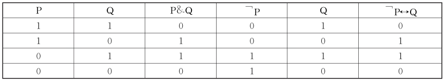
（2）变形公式
该等价转换的变形如下：
①﹁P& Q= P↔Q
②P&﹁Q= P↔Q
如果P,那么Q=或者非P,或者Q。
（1）基本公式
P→Q=﹁P∨Q
可用真值表来证明：
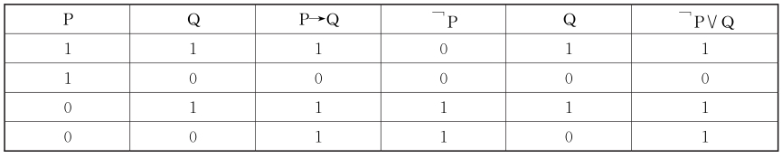
这一等价公式还可以从两个角度来理解：
第一，一个充分条件假言命题，只要其前件是假的，或者其后件是真的，它本身就是真的，即“如果P，那么Q” 等值于“或者非P，或者Q”。
第二，“或者非P，或者Q”这一相容选言命题成立，根据否定肯定式，否定非P就要肯定Q，即有P就有Q，可理解为“若有P则有Q”。这就是说，“﹁P∨Q”与“P→Q”是等值的。
（2）变形公式
该等价转换的变形如下：
①﹁P→Q= P∨Q
②P→﹁Q=﹁P∨﹁Q
只有P,才Q=或者P,或者非Q。
（1）基本公式
P←Q= P∨﹁Q
可用真值表来证明：
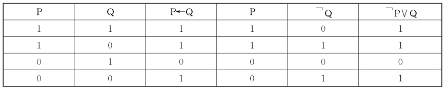
（2）变形公式
该等价转换的变形如下：
①﹁P←Q=﹁P∨﹁Q
②P←﹁Q=P∨Q
根据上述复合命题等价转换的推理形式、含义与推理规则，下面举例说明其逻辑应用。
分析：上文关系式为：﹁吃→﹁跑。等价于：吃←跑
分析：把“2+ 2= 5”表示为P，“地球是方的”表示为Q，则上文推理为P→Q。
分析：上文断定，高层管理人员本人不参与薪酬政策的制定→公司最后确定的薪酬政策就不会成功。
否定一个命题，也就是肯定了一个与被否定命题相矛盾的命题。所以，一个负命题与其支命题的矛盾命题在逻辑上是等值的。我们总是可以从一个负命题推得一个与它等值的新命题，这就是等值推理。
近代数学家、逻辑学家德·摩根明确陈述了各种基本复合命题的负命题公式，即摩根定律，可表述如下：
①﹁（P∧Q）↔﹁P∨﹁Q
②﹁（P∨Q）↔﹁P∧﹁Q
③﹁（P& Q）↔（P∧Q）∨（ ﹁P∧﹁Q）
④﹁（P→Q）↔P∧﹁Q
⑤﹁（P←Q）↔﹁P∧Q
⑥﹁（P↔Q）↔（P∧﹁Q）∨（ ﹁P∧Q）
下面分别进行论述。
（一）联言命题的负命题及其等值推理
由于联言命题只要其支命题有一个为假，该命题就是假的。因此，联言命题的负命题是一个相应的选言命题。
并非“P并且Q”等值于“非P或者非Q”。
用公式表达为:﹁（P∧Q）=﹁P∨﹁Q
因为，﹁P∨﹁Q= P→﹁Q= Q→﹁P
所以，﹁（P∧Q）=﹁P∨﹁Q= P→﹁Q= Q→﹁P
并非“非P并且非Q”=“P或者Q”
﹁（﹁P∧﹁Q）= P∨Q=﹁P→Q=﹁Q→P
分析：
设P：对所有报名参加国庆检阅方阵的学生进行了体检； Q：没有发现心脏异常者。上述断定为假,可表示为:﹁（P∧Q）=﹁P∨﹁Q= P→ ﹁Q= Q→﹁P。
分析：蒙代尔的理论是，在开放经济条件下，一国的独立货币政策（P）、国际资本流动（Q）、货币相对稳定的汇率（R），不能三者都得到。可表示为：
分析：令P表示“过直线外一点可以作一条直线与该直线平行”， Q表示“过直线外一点只可以作一条直线与该直线平行”。
（二）选言命题的负命题及其等值推理
选言命题分为相容选言命题和不相容选言命题两种，因此相应地也有两种负命题及其等值推理。
由于相容选言命题只要其支命题中有一个为真，则整个选言命题就是真的，故相容选言命题的负命题不能是一个相应的选言命题，而必须是一个相应的联言命题。
（1）相容选言命题的负命题
并非“P或者Q”等值于“非P并且非Q”。
用公式表达为:﹁（P∨Q）=﹁P∧﹁Q
（2）相容选言负命题的变形推理
并非“非P或者非Q”等值于“P并且Q”。
用公式表达为：﹁（﹁P∨﹁Q）= P∧Q
（3）思维训练
分析：上文断定：
分析：
令P表示“环岛绿地工程上马”； Q表示“宏达小区工程上马”； R表示“清河桥改造工程上马”。
由于不相容选言命题只有当选言支仅有一个是真的时，整个选言命题才是真的，当选言支同真或同假时，它就是假的。
（1）不相容选言命题的负命题
并非“要么P，要么Q”等值于“P并且Q，或者，非P并且非Q”。
用公式表达为：﹁（P& Q）=（P∧Q）∨（ ﹁P∧﹁Q）
（2）不相容选言负命题的推论
﹁（P& Q）=（P∧Q）∨（﹁P∧﹁Q）
=﹁（P∧Q）→（﹁P∧﹁Q）
=﹁（﹁P∧﹁Q）→（P∧Q）
分析：﹁（P&Q）=（P∧Q）∨（ ﹁P∧﹁Q）=﹁（﹁P∧﹁Q）→（P∧Q）
（三）假言命题的负命题及其等值推理
假言命题分为充分条件假言命题、必要条件假言命题和充要条件假言命题三种，因此相应地也有三种负命题及其等值推理。
由于充分条件假言命题只有当其前件真后件假时，它才是假的，因此，一个充分条件假言命题的负命题，只能是一个相应的联言命题。
（1）充分条件假言命题的负命题
并非“如果P，那么Q”等值于“P并且非Q”。
用公式表达为：﹁（P→Q）= P∧﹁Q
（2）充分条件假言负命题的变形推理
①﹁（P∧Q→R）=（P∧Q）∧﹁R
②﹁（P∨Q→R）=（P∨Q）∧﹁R
（3）思维训练
分析：心理学理论可表示为：
分析：胡晶认为“如果疫病传播，那么，损失将不可挽回”。
分析：上文中网友对相关热门场馆选择的建议是：
由于必要条件假言命题只有当其前件假而后件真时，它才是假的。因此，一个必要条件假言命题的负命题，只能是一个相应的联言命题。
（1）必要条件假言命题的负命题
并非“只有P，才Q”等值于“非P并且Q”。
用公式表达为：﹁（P←Q）=﹁P∧Q
（2）必要条件假言负命题的变形推理
①﹁（P∧Q←R）=﹁（P∧Q）∧R=（﹁P∨﹁Q）∧R
②﹁（P∨Q←R）=﹁（P∨Q）∧R=（﹁P∧﹁Q）∧R
分析：上文断定，要成为免试推荐生，“成绩列前三位”同时“有两位教授推荐”这两个必要条件必须同时满足。即：
分析：上文断定：
由于充分必要条件假言命题其前件既是后件的充分条件，又是后件的必要条件，因而，对于一个充分必要条件的假言命题来说，其负命题既可以是相应的充分条件假言命题的负命题，也可以是相应的必要条件假言命题的负命题。
（1）充要条件假言命题的负命题
并非“当且仅当P，才Q”等值于“P并且非Q，或者，非P并且Q”。
用公式表达为：﹁（P↔Q）=（P∧﹁Q）∨（ ﹁P∧Q）
（2）充要条件假言负命题的推论
﹁（P↔Q）
=（P∧﹁Q）∨（﹁P∧Q）
=﹁（P∧﹁Q）→（﹁P∧Q）
=﹁（﹁P∧Q）→（P∧﹁Q）
在日常思维中，在反驳对方时，经常把对方所表达的充分条件误解为必要条件，或者把对方所表达的必要条件误解为充分条件。若我们准确掌握了上述假言命题的负命题，那么一方面自己不会犯这样的错误，另一方面也容易识别他人的逻辑错误。
分析：上述对话可表达如下：
分析：上述对话可表达如下：
混合推理指的是针对多重复合命题的推理。多重复合命题是指支命题为复合命题的复合命题。支命题是构成复合命题的命题，支命题可以是简单命题，也可以是复合命题。如果一个复合命题的支命题是包含两个或两个以上命题联结词的复合命题，则被称为多重复合命题。在日常思维中，单纯地使用某一种特定的复合命题或复合命题推理的情况是很少的，我们更多地用多重复合命题来表达我们的思想。
假言推理是前提中至少有一个假言命题，并根据假言命题的逻辑性质而推出结论的演绎推理。假言推理分为假言直接推理（前面已论述）和假言间接推理。其中：假言间接推理包括：假言三段论、假言连锁推理、假言选言推理等。
（一）假言三段论
假言三段论包括前面所述的充分条件的假言推理、必要条件假言推理、充要条件假言推理，其推理规则在前面已有论述。假言三段论推理又可分为推出假言三段论的结论和导出假言三段论的省略前提两种推理。
假言三段论的推论就是运用演绎推理的规则，推出假言推理的结论。
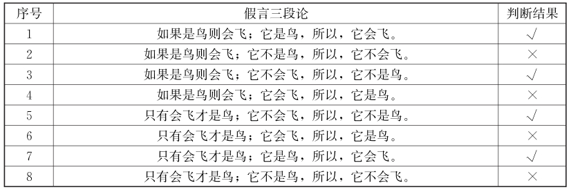
（1）推出充分条件假言三段论的结论
推出充分条件假言三段论的结论需要符合充分条件假言三段论的演绎规则，下面举例说明：
分析：上文推理为：二层以上→安全通道。
（2）推出必要条件假言三段论的结论
推出必要条件假言三段论的结论需要符合必要条件假言三段论的演绎规则，下面举例说明：
分析：上文断定：不懂几何→禁入
分析：上文断定如下：
分析：上文条件关系为：
（3）推出充要条件假言三段论的结论
推出充要条件假言三段论的结论需要符合充要条件假言三段论的演绎规则，下面举例说明：
分析：上文陈述的条件关系如下：
假言推理的省略形式是省略了某个推理步骤的假言推理，这里指的是省去一个前提的假言三段论推理。
导出假言三段论的省略前提的推理步骤如下：
①抓住结论和前提。
根据既有陈述依次对前提和结论做出准确的理解，并列出条件关系式。
②揭示省略前提。
依据合理性原则，凭语感揭示出被省略的前提。
③检验推理的有效性。
把省略的前提补充进去，并作适当的整理，将推理恢复成标准形式，根据假言推理的演绎推理规则检验上述推理是否有效。
分析：上文是个省略的假言三段论，补充省略前提后构成一个有效的推理：
分析：上文是个省略的假言三段论，补充省略前提后构成一个有效的推理：
分析：上文是个省略的假言三段论，补充省略前提后构成一个有效的推理：
（二）假言连锁推理
假言连锁推理又叫作纯假言推理、纯假言三段论，是由两个或两个以上同种条件关系的假言命题为前提，推出一个新的假言命题为结论的推理。
假言连锁推理的前提和结论全部由假言命题构成，要求前提中的第一个假言命题的后件必须与第二个假言命题的前件相同，因此这种推理的合理性是建立在条件关系的传递性基础上的。实际上，假言连锁推理所显示的推理关系的传递性可以一直进行下去，直到满足需要为止。
1.充分条件假言连锁推理
充分条件假言连锁推理是以充分条件命题为前提的假言连锁推理。
（1）肯定式
如果P，那么Q
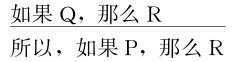
【案例】
火山爆发与粮食涨价
1982年2月，墨西哥的一座火山爆发了。美国政府的决策部门马上决定，囤积粮食，削减种植面积，促使粮食涨价。这二者之间是什么关系呢？原来，美国人经研究，认为火山爆发必然产生火山灰。大量火山灰进入大气，将遮住大量阳光，使地球气候变冷。同时尘埃在大气中形成了可使水蒸气凝结的“核”，水蒸气得以聚集，成为雨，全球降雨量就增加了。一些地区低温多雨又引起另一些地区干旱少雨，这样就会导致世界性的粮食减产。
事情的发展正如美国人所预料的一样， 1983年世界气候恶化，农业歉收，不少国家要求从美国进口粮食，美国人达到了囤积居奇的目的，狠狠地赚了一笔。
分析：美国政府决策部门的分析是这样的：
如果火山爆发，则会产生火山灰。（P→Q）
如果火山灰进入大气，就会使一些地区低温多雨。（Q→R）
如果一些地区低温多雨，另一些地区就会干旱少雨。（R→S）
如果一些地区干旱少雨，就会导致世界性粮食减产。（S→A）
如果出现世界性粮食减产，则不少国家要向美国买粮食。（A→B）
如果不少国家要向美国买粮食，则美国可以提高粮食价格大赚一笔。（B→C）
这是一个假言连锁推理：
（P→Q），（Q→R），（R→S），（S→A），（A→B），（B→C），
所以，（P→C）
结论为，如果火山爆发，则美国可以提高粮食价格大赚一笔。
（2）否定式
如果P，那么Q
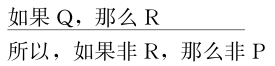
必要条件假言连锁推理是以必要条件命题为前提的假言连锁推理。
（1）肯定式
只有P，才Q
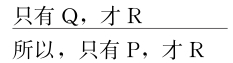
（2）否定式
只有P，才Q
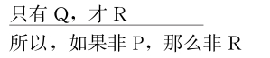
根据上述假言连锁推理的形式、含义与推理规则，下面举例说明其逻辑应用。
分析：上文断定：
分析：上文断定：尼禄是罗马皇帝；罗马皇帝都必然用锡器皿喝酒；用锡器皿喝酒必然中毒；中毒必然精神错乱。
分析：在上文中“第二味觉”是“边吃边呼吸”的必要条件，而“边吃边呼吸”又是“高效率的新陈代谢”的必要条件，因此，“第二味觉”是“高效率的新陈代谢”的必要条件。即上文推理是：
（三）假言选言推理
假言选言推理也称为二难推理，是由两个假言命题和一个有两个选言支的选言命题做前提构成的推理。
因为这种推理有时反映左右为难的困境，故称二难推理。在辩论中人们经常运用这种推理形式，辩论的一方常常提出具有两种可能的大前提，对方不论肯定或否定其中的哪一种可能，结果都会陷入进退两难的境地。
【案例】
鳄鱼悖论
以下是根据古希腊斯多葛派提出的“鳄鱼悖论”改编的童话故事。
一位年轻的母亲带着女儿在河边玩耍。突然，鳄鱼咬着了她的女儿。母亲要求鳄鱼放了她女儿。鳄鱼说：“你如果能猜对我的心思，我就放了你的女儿。”心思是隐性的，难以捉摸的，鳄鱼很是狡猾。这位聪明的母亲想：只有让鳄鱼处于两难，才能救回女儿。于是她说：“我猜你想吃掉我女儿。”这么一说，使鳄鱼左右为难，如果鳄鱼说“猜对了”，那根据猜对就要放人的约定，应该放了女孩;如果它说“没猜对”，那就是说，它不想吃掉她女儿，根据约定也应该放了女孩，鳄鱼或说“猜对了”，或说“没猜对”，无论鳄鱼怎样回答，它都得放了女孩。
分析：这个故事，体现了这位年轻母亲的智慧，也说明她正确地运用逻辑二难推理的技巧。
二难推理有如下四种基本形式：
（1）简单构成式
两个假言前提有不同的前件，但有相同的后件，因此肯定其前件，就可以推出其相同的后件（结论）。
①简单构成式的一般推理结构可表述如下：
如果P，那么R
如果Q，那么R
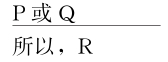
②简单构成式的简约式可表述如下：
如果P，那么R
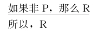
分析：
如此的质问就将对手（此处指的是国家航空航天局的管理者们）推入二难境地，令他们无地自容。其中唯一明确表述的前提是一个析取命题，但析取支必定有一个为真，或者他们知道或者他们不知道手下发生的事。不管选择哪一方，结果对对手来说都是不利的。
（2）简单破坏式
这种形式是，在这个推理中，两个假言前提有不同的后件，但有相同的前件，因此不论否定哪一个后件，结果总是否定了相同的前件。这个推理的结构可表述如下：
如果P，那么Q
如果P，那么R
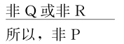
（3）复杂构成式
这种形式是，两个假言前提有不同的前件和不同的后件，因此肯定这个或那个前件，结论便肯定这个或那个的后件。它的推理形式可表述如下：
如果P，那么R
如果Q，那么S
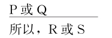
【案例】
庸芮的游说
魏丑夫是战国时期秦国宣太后芈月的男宠。秦昭襄王四十二年，宣太后生病将要死去，于是拟下遗命：“如果我死了，一定要让魏丑夫为我殉葬。”魏丑夫听说此事，忧虑不堪，幸亏有秦臣庸芮肯为他出面游说宣太后：“太后您认为人死之后，冥冥之中还能知觉人间的事情吗？”宣太后说：“人死了当然什么都不会知道了。”庸芮于是说：“像太后这样明智的人，明明知道人死了不会有什么知觉，为什么还要故意把自己所爱的人置于死地呢？假如死人还知道什么的话，那么先王早就对太后恨之入骨了。太后赎罪还来不及呢，哪里还敢和魏丑夫有私情呢。”宣太后觉得庸芮说得有理，就放弃了魏丑夫为自己殉葬的念头。
分析：庸芮为了营救魏丑夫，就运用了简单破斥式的二难推理，其推理形式为：
如果太后死后无知，那么让魏丑夫殉葬会白白葬送生前喜爱的人;
如果太后死后有知，那么让魏丑夫殉葬会触怒先王;
或者太后死后无知，或者太后死后有知;
所以，让魏丑夫殉葬，那么，或者会白白葬送生前喜爱的人，或者触怒先王;
总之，让魏丑夫殉葬不好。
所以，就没必要让魏丑夫殉葬了。
（4）复杂破坏式
这种形式是，两个假言前提有不同的前件和不同的后件，因此否定这个或那个后件，结论便否定这个或那个前件，它的推理形式可表述如下：
如果P，那么R
如果Q，那么S
任何形式的二难推理，必须具备前提真实和形式有效，才是正确的，不具备这两个条件的二难推理必是错误的。上述四种形式的二难推理都是二难推理的有效的推理形式。即只要其前提是真实的，那么运用这四种形式都能得出必然可靠的结论。
二难推理是日常语言中的一种常见论证，从古代沿袭下来。在古代，逻辑和修辞的关系较现在紧密得多。从单纯的逻辑观点看，二难推理没有什么特别重要的地方。但从修辞角度看，二难推理是一种最有力量的说服工具之一，可谓论战中的一种致命性武器。争论过程中，二难推理使得对手必须做出选择，但无论选择什么，都会得出一个他不能接受的结论。
【案例】
囚徒困境
在博弈和决策活动中，决策者必须根据所掌握的关于局势和其他决策者可能的行动选择的信息，做出与自身目标一致的行动选择。这一过程的关键是推理，它也是博弈分析和决策分析的基础。下面是博弈论中非常有名的“囚徒二难”博弈。
甲乙两名犯罪嫌疑人被分别关在两间牢房里。如果他们都坦白，则每人将判3年徒刑;如果只有一人坦白，则坦白者作为污点证人被释放，另一人将判4年徒刑;如果两人都不坦白，则两人都因证据不足被判1年徒刑。
以徒刑期为效用值，囚徒困境可表示为双矩阵：
（坦白、坦白）是这个博弈的唯一的纳什均衡，因为无论囚徒甲（囚徒乙）选择什么，囚徒乙（囚徒甲）选择坦白都会有最大效用。但是（坦白，坦白）的效用值是（- 3，- 3），明显低于（不坦白，不坦白）的效用值（- 1，- 1）。这就是说，均衡结果并不总是帕累托最优的结果，理性选择在策略性互动环境中并不总是遵循效用最大化原则。
分析：这个博弈中，两个囚徒在确定自己的策略时都运用了二难推理：囚徒甲认为，如果乙选择“坦白”，则自己的最优行动是“坦白”;如果乙选择“不坦白”，则自己的最优行动仍然是“坦白”。因此，无论乙选择“坦白”或者选择“不坦白”，自己的最优行动总是“坦白”。
对于囚徒乙，他的推理与甲完全一样，结论同样是选择“坦白”。
因此，这个博弈的结局是两个囚徒都选择“坦白”，它给两个囚徒各带来3年徒刑。相对于其他可能的结局，这个结局对两个囚徒是不利的，但却是理性选择的结果。囚徒博弈中二难推理体现了博弈中决策的互动性，这正是博弈与单人决策活动的区别所在。
3.避开或驳斥二难推理的三种常用方法
由于二难推理是一种很有用的推理，是论辩中的一种有力工具，因此在人们的实际思维中经常地使用它，论辩者可能用它来为对手设置圈套。但是并非人人都能正确地使用这种推理形式，而且诡辩论者也经常利用二难推理进行诡辩，所以对于不正确的二难推理必须避开或加以驳斥。
避开或驳斥二难推论的结论常用的方法有三种，都与二难的两个“死角”有关。分别称为“绕过犄角法”“直击犄角法” “避开犄角法”。
（1）“绕过犄角法”：证明析取前提为假
二难推理的主要特征是通过小前提所提供的非此即彼或亦此亦彼的选择而体现出来，若指出选言支不穷尽，即在P或者Q这两个选言支以外，还有第三种选言情况存在，这样就从二难的犄角间逃脱了。
分析：这个选言前提的选言支没有穷尽所有的可能情况，它遗漏了课外活动搞得适中这种可能，而这种可能又是搞课外活动应遵循的一种可能。
（2）“直击犄角法”：指出其假言前提的虚假
这种方法就是要证明二难的犄角为假，即“抓住犄角”。具体而言，是指出二难推理的前提不真实，指出对方预设的前提标准不真实。即充分条件假言命题的前件、后件之间不具有充分条件关系，这需要具体知识来完成。
分析：在上面这个二难推理的复杂构成式中，两个充分条件假言判断的前件都不是后件的充分条件。因为天是否下冰雹，跟喇嘛念经根本没有关系。换言之，它的前提是虚假的，是喇嘛为剥削农奴而人为捏造出来的。
（3）“避开犄角法”：构造一个反二难推理
构造一个反二难推理，将自己从二难困境中解脱出来。即避开对方顶来的两个犄角，重新构造一个与对方结构相同的二难推理，却推出与对方相反的结论，使对方处于同样的二难困境，从而把对方顶过来的犄角再顶回去。
【案例】
父亲的劝诫
古希腊雅典有一位青年，他能言善辩，四处奔波，到处发表演说。一天，他父亲忧心忡忡地对他说：“孩子，你可得当心!你那么热衷于演说，不会有好结果。说真话吧，富人或显贵会恨死你;说假话吧，贫民们不会拥护你。可是既要演说，你就只能是或者讲真话，或者讲假话，因此，不是遭到富人显贵们的憎恨，就是遭到贫民们的憎恨，总之是有百弊而无一利啊!”
儿子是这样反驳父亲的：“父亲，您老不用担心。如果我说真话，那么贫民们就会赞颂我;如果我说假话，富人显贵们就会赞颂我。虽然我不是说真话，就是说假话，但不是贫民们赞颂我，就是富人显贵们赞颂我，何乐而不为呢？”
分析：在这个案例中父亲劝儿子就使用了一个二难推理，形式是：
如果你说真话，那么富人们憎恨你;
如果你说假话，那么贫民们憎恨你;
或者你说真话，或者你说假话;
总之，有人憎恨你。
儿子反驳父亲则使用了一个反二难推理，形式是：
如果我说真话，那么贫民们就会赞颂我;
如果我说假话，那么富人们就会赞颂我;
或者我说真话，或者我说假话;
总之，有人赞颂我。
儿子通过构造一个反二难推理，得出与他父亲截然相反的结论，这就将父亲的责难有力地顶了回去。
其实构造反二难推理并不足以推翻一个给定的二难推理，因为它并没有对最初的二难推理的可靠性提出任何质疑，它只是显示不同的路径可以导致同样的问题。如果更细致地研究，就会发现它们的结论并不像初看上去那样对立。第一个二难推理的结论是儿子会被憎恨（被富人们或者被贫民们），而反二难的结论是儿子会被赞颂（被贫民们或者被富人们）。实际上两者完全是相容的。反驳用的反二难推理仅仅是建构了一个结论不同的论证而已。两个结论可能都是真的，只能说明看问题的视角不同，并非对事实状况的意见不一致，因而这里并没有达成真正的反驳。即如此反驳并不能驳倒原有推理，而只是将注意力引向同一事情的不同方面。
【案例】
半费之讼
在雅典民主制时期，传说有一个叫欧提勒士的人，向著名的辩者普罗塔哥拉斯学习法律。两人订下合同：欧提勒士分两次付清学费，开始学习时先付一半，另一半等欧提勒士毕业第一次出庭打官司打赢了再付。但是欧提勒士毕业后迟迟不出庭打官司。普罗塔哥拉斯等得不耐烦，准备向法院提出诉讼。他对欧提勒士说：
“我要到法院告你。如果我打赢了官司，那么按照法庭判决，你应该付给我另一半学费;如果我打输了官司，那么按我们的合同，你也应该付给我另一半学费;不论这场官司我是赢还是输，反正，你应付给我另一半学费。”
欧提勒士也不示弱，他针锋相对说：“只要你到法院告我，我可以不给你另一半学费。因为，如果我的官司打赢了，那么按照法庭的判决，我不应付给你另一半学费;如果我的官司打输了，那么，按我们的合同，我也不应付给你另一半学费;不论这场官司我是赢是输，反正，我不应付你另一半学费。”
据说，这场官司后来难倒了法官，以至无法做出判决。
分析：这就是逻辑史上著名的“半费之讼”。从形式上看，师生双方都是用二难推理进行诡辩。
初看起来，师生双方的主张都有道理，但是仔细推敲我们不难发现，他们都是采用了双重标准。当法庭判决对自己有利的时候，他们就以法庭的判决为准，当契约对自己有利的时候，就以契约为准。也就是说，老师普罗塔哥拉斯看到自己胜诉的时候就主张以法庭判决为准，要求学生付费;当老师败诉的时候，就根据契约要求学生付费。学生的主张与老师相反，当他败诉的时候，也就是老师胜诉要求以法庭判决为准的时候，他要求以契约为准，所以，不必付费;而当他胜诉的时候，也就是老师败诉要求以契约为准的时候，他要求按照法庭的裁决为准，也就是说不必付费。
普罗塔哥拉斯与他的学生欧提勒士得出了完全相反的结论，究其原因，是因为他们的前提中包含着不一致：一个是承认合同的至上性，一是个承认法庭判决的至上性，哪一项对自己有利就利用哪一项，而这两者是相互矛盾的。这里的问题就是他们双方都默认“约定”和“判决”可以同时而且等效地来解决他们的纠纷，这是他们共同的前提。从逻辑上化解它们的办法就是选择其中的一个进行最终裁决。
二难推理虽然不是基本的逻辑推理形式，它往往是为了说明结果的二难处境或者是为了强调某一结论所进行的推理，但是一种实用的推理。根据上述二难推理的形式、含义与推理规则，下面举例说明其逻辑应用。
分析：爱因斯坦的陈述：
分析：俄罗斯面临两个选择：
复合推演是指复合命题的混合推理，推理步骤是先把各种陈述翻译成符号逻辑的记法，然后使用逻辑演绎推出一个结论。
（一）演绎有效性与推理方法
复合推演是典型的逻辑演绎问题，逻辑演绎的正确推理必须保证推理形式有效，推理形式的有效性也称保真性，是指一个正确有效的演绎推理必须确保从真前提只会得到真结论。具体而言，一个推理形式是有效的，当且仅当该推理形式确保：只要按照这种形式进行推理，无论从具体有什么样内容的前提出发，只要这些前提是真的，推出的结论必定是真的。
命题逻辑常用的演绎推理方法和步骤如下：
抽象思维是形式推理的基本方法，逻辑推理是排斥形象思维的。对问题的抽象指的是把文字叙述转化为形式化的表达，也就是用一些符号、字母来表达事物间的联系，具体要结合语境，进行理解分析。写条件关系式的基本步骤如下：
第一，确定复合命题所包含的所有不同的原子命题。在命题推理中，事实上在整个命题逻辑中，原子命题作为最基本的单位，它的内部结构不再分解。
第二，用同一命题变项表示所有相同的原子命题，用不同的命题变项分别表示所有不同的原子命题。
第三，分别写出各个前提和结论的真值形式。确定复合命题所断定的支命题之间的逻辑关系，并用相应的真值联结词加以表达。
第四，用合取号把各个前提的真值形式联结起来，所得的合取式，即前提的真值形式。
第五，依据确定的层次，写出整个复合命题的真值形式。用蕴含号把前提和结论的真值形式联结起来，所得的蕴含式，即是整个命题推理的真值形式。
命题逻辑演绎推理的过程主要包括以下几点：
第一，写出原条件关系式等值的逆否命题。
原命题与逆否命题为等价命题，如果一个命题正确，那么它的逆否命题也一定正确。
A→B1∨B2的逆否命题为﹁B1∧﹁B2→﹁A
A→B1∧B2的逆否命题为﹁B1∨﹁B2→﹁A
B1∨B2→A的逆否命题为﹁A→﹁B1∧﹁B2
B1∧B2→A的逆否命题为﹁A→﹁B1∨﹁B2
比如：﹁A∧﹁B→﹁C∨D的逆否命题为A∨B←C∧﹁D
再如：﹁（A∧B）→﹁C∨D的逆否命题为A∧B←C∧﹁D
第二，若原文陈述只有一个条件关系，往往只要结合原命题与逆否命题的理解即可推出结果。
要注意，顺着原命题和逆否命题这两个条件关系式箭头方向推出的结果都必然是正确的，不能逆着箭头方向推，得不到任何结果。
第三，若原文陈述有多个条件关系，则需要进行一定的逻辑命题演算，从而推导出答案。
从推理起点出发，列出推理链，通过串联多个条件关系式，从而推出必然的结果。
比如： A→B， C→﹁B，可得出A→﹁C
另外，要注意运用对选言推理和假言推理的理解，包括前面所述的等价式，善于变形推理，进行公式互推。
（二）复合推演的逻辑应用
命题逻辑的复合推演主要包括演绎推论、补充前提、结构比较和评价描述等类型，下面分别进行举例分析。
推出命题逻辑的结论即演绎推论，通常要求我们从上文出发，可以逻辑地推出什么结论（或不可能推出什么结论）。其主要步骤是：
首先，按原文的顺序陈述依次做出准确的理解，列出条件关系式。
然后，根据所列条件关系式，以及复合命题的演绎推理规则，推出结论。
分析：根据原文陈述列出如下条件关系式：
分析：上文推理为：
分析：上文断定：
在日常论证中，所运用的演绎推理经常是不完整的，是省略前提的。省略的前提就是隐含的假设，要对论证的有效性做出评估，必须揭示出隐含的假设。
揭示复合命题演绎推理的省略前提的主要步骤如下：
第一步，抓住结论和前提。
按原文的顺序陈述依次对前提和结论做出准确的理解，列出条件关系式。
第二步，揭示省略前提。
依据合理性原则，凭语感揭示出被省略的前提。
第三步，检验推理的有效性。
把省略的前提补充进去，并作适当的整理，将推理恢复成标准形式，根据复合命题的演绎推理规则检验上述推理是否有效。当省略的前提条件为真时，结论就必然会被推出。
分析：上文是个省略的假言三段论，补充省略前提后构成一个有效的推理：
分析：上文前提是，没有一个经过检查的土豆是绿色的或发芽的。意思就是，所有经过检查的土豆都不是“绿色的或发芽的”。补充假设后，论证过程如下：
复合命题推理的结构比较指的是推理形式上的相似比较，其主要思路如下：
①抽象思维。要从具体的、有内容的原文论述中抽象出一般命题逻辑的形式结构。
②忽略内容。即不必关注命题的真假、论证的内容及其真实与否，只考虑抽象出推理结构和形式，而不考虑其叙述内容的对错。
③相似比较。即比较诸选项的形式结构，根据问题要求，找出形式结构上与原文中类似或不类似的选项。
分析：上文论证形式为：或者P，或者Q，或者R；非P，非Q；所以R。
评价描述主要是要求识别原文演绎论证的结构方法以及推理缺陷等，需要用逻辑的语言来描述给出的推理过程或逻辑错误。
针对命题逻辑的评价描述主要考察两个方面：一是在假言推理中充分条件和必要条件是否运用正确;二是复合命题推理是否有效，即是否符合复合命题的演绎推理规则。
分析：上文前提是：计算机科学家←懂得个人电脑的结构←赞赏技术进步。